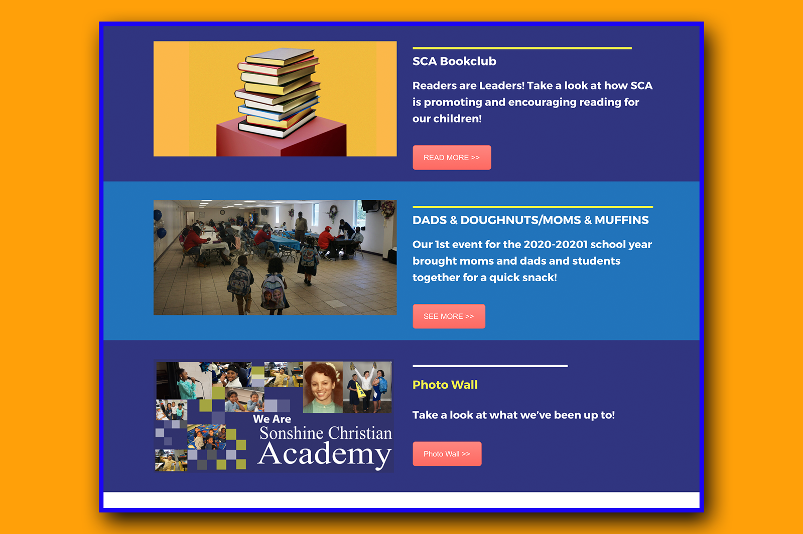
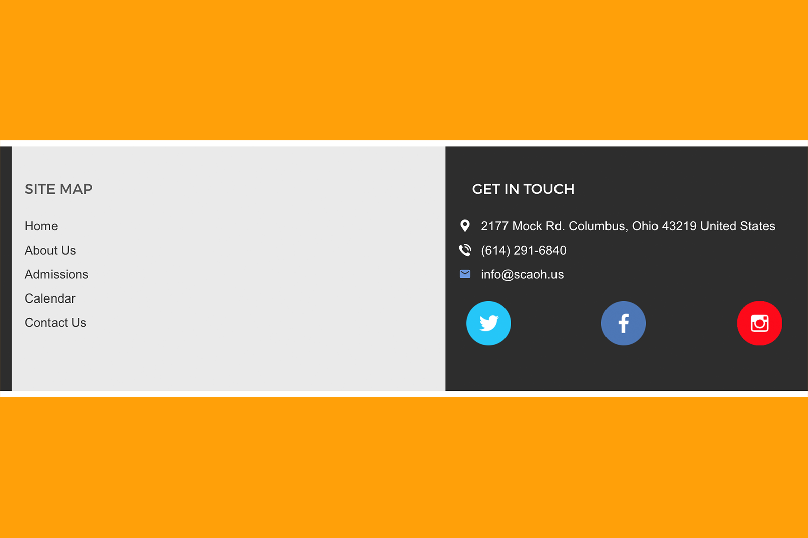
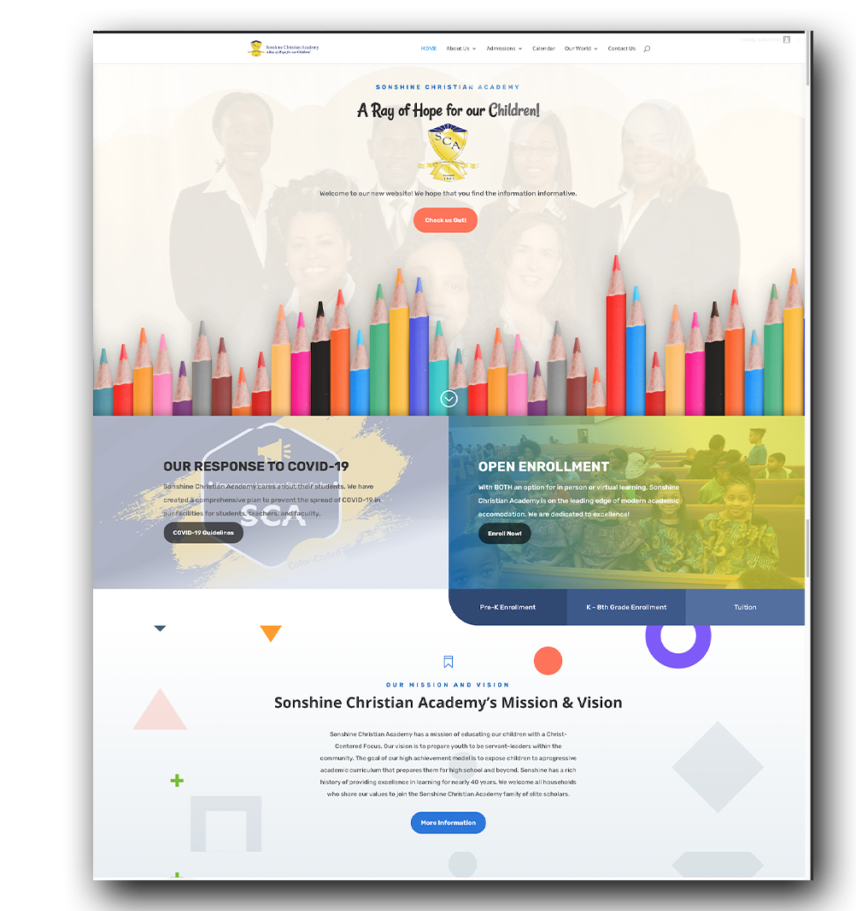
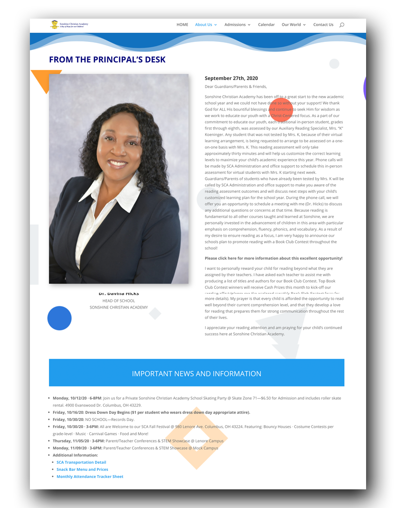

The Challenge
We were asked to sit on the board of directors and redesign the website. This website was using WordPress. Since most of the content was still 'fresh', this helped in regards to copying and pasting over material such as school history
,the school's mission and vision, as well as school cirriculumn. But some items needed to be added such as a more inclusive school calendar,
more photos of children in the classroom, as well as a better and more modern way to navigate.
After doign an extensive search on the best possible theme, as mentioend broere, EdTheme was the choice. With it, it was easy to not only get the
new site up and runnign in about 1.5 months, but it wasa lso 3rd party plugin friendly, which menat that there were very little issues
installing plugins. Here are screenshots of the final project.

Menu bar was kept simple; icons for this project were mostly custom drawn

Visitors were greated with important info at the homepage

Creating the footer was difficult due to limitatiosn of the margins

A sample of using a custom built template with EdChoice

A cute face that appears when looking at the home page
We Were Not Satisfied!
No, not Sonshien Christian Academy was not satisfied, it was US who were not satisfied LOL. After a couple of years the theme was showing it's age. Plugins were not installing correctly
,a couple of times the entire WordPress database crashed, and lets face it it was becoming stale becuase of the limitations that
were present. Enter Divi, a theme that was not only easy to use, but also easy to apply code without crashing the WordPress database!
With way more options to change and control the entire theme, elements, and even customized mobile responsive layouts, this was a dream
for us! Take a look at the results. See how more modern (as one board member puts it) the website looks!

Notice how each calendar event is more informative when compared to the old layout. Information can be accessed
on the spot

A more complicated, but more clean homepage

Dr. Hick's message webpage had a major overhaul

COVID-19 information was given special attention to keep students and staff safe

A complete makeover for the missiona nd vision of SCA

Board member webpage loook'in good. Next up, SCA's teachers and staff page